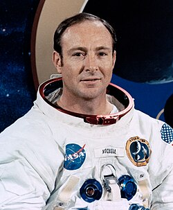

Edgar Mitchell
Apollo 14 astronaut, 1930 to 2016

A Navy officer and the sixth person to walk on the Moon, on Apollo 14 in 1971, who grew up in Artesia, New Mexico, near Roswell. 1
He later said he was 90 percent sure some UFOs were visitors from other planets and that the Roswell crash was real, citing sources he did not name. NASA said it did not share his opinions, and in 2014 he said he had never seen a UFO and that talk of a worldwide cover-up was just speculation on his part. 1
Open in the interactive Watcher
Related
Sources
- Edgar Mitchell Wikipedia